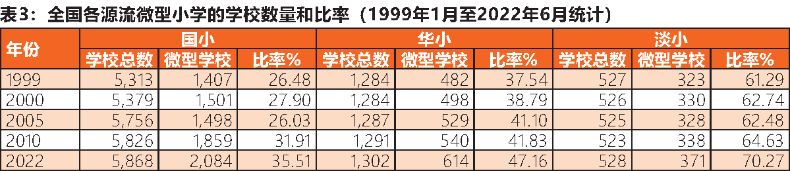

马来西亚微型华小概况——兼谈应对之策
一、前言
2022年6月29日，教育部管理层会议同意推行所建议的微型小学合并计划。教育部教育政策研究和规划司于7月13日致函指示各州教育局执行微型小学合并计划。在收到州教育局指示后，各县教育局于8月陆续个别召集有关10名学生及以下的微型国小、华小和淡小，并发出调查问卷给学生家长回答是否同意合并学校。由此，微型华文小学合并成为备受华社关注的课题。本文将简述微型华小概况，并探讨一些应对之策。
二、华小学生减少和微型华小增加的概况
全国华小学生人数从2004年高峰期的647,647人，剧减至2022年的495,386人，共减少了152,261人，其中西马减少134,243人，东马减少18,018人。1970年至2022年，全国减少了44所华小。1947年至2022年，西马则减少383所华小。（见表1、2）
按教育部规定，微型学校（Sekolah Kurang Murid）是指学生人数少过150名学生（即149人及以下）的学校。据该部统计，全国各源流微型小学数量逐年增加。当中，微型华小从1999年1月31日的482所（37.54%）增至2022年6月30日的614所（47.16%）。（表3）
华小学生人数减少和微型华小数量增加的主要原因是：（1）华裔人口内部因素，即华裔育龄女性（15-49岁）总生育率大幅度减少，从1957年的7.4减至2021年的0.8（表4），远低于生育替代水平2.1，导致每年华裔新生婴儿人数趋向减少；（2）华裔人口迁移，即人口内移（在国内各地之间的迁移）和人口外移（一部分华裔年轻家庭在国外居留和生活，或移民到其他国家，故孩子们在当地学校上学）。而私立学术学校和国际学校并不是华小学生人数减少的主因。
根据教育部截至2022年6月30日统计，全国1,302所华小有495,386名小学生（1至6年级普通基础教育班学生和特殊教育班学生，但不包括学前教育班学生）和35,875名教师，当中547所华小开办学前教育班有14,661名学生。按3月31日统计，全国有111所华小开办特殊教育班，学生人数达2,187人。
全国614所微型华小有42,202名（8.52%）小学生，7,384名（20.58%）教师，当中282所开办学前教育班有5,507名（37.56%）学生。最多微型华小的州属依序是砂拉越（126所）、霹雳（116所）、柔佛（103所）、吉打（54所）、森美兰（45所）、彭亨（42所）、马六甲（36所）、槟城（26所）、雪兰莪（25所）、沙巴（23所）、登嘉楼（6所），以及玻璃市、吉隆坡和吉兰丹（各4所）。（表5）
三、30名学生及以下的微型华小概况
在全国614所微型华小当中，需特别关注“30名学生及以下”和“31至50名学生”这两个组别的微型华小。尤其是10名学生及以下的微型华小，更是缺乏学生来源，可能需迁校，或将面临关闭。至于51至149名学生的微型华小，其学生来源还是比较足够和稳定的。（表6）
全国有99所微型华小的学生人数介于1至30人，共有1,855名小学生，777名教师，皆没有开办特殊教育班，惟当中的10所有开办学前教育班，共78名学生。表7列出有关微型华小名单，可供各界参考，进行实地调研和交流，寻求对策。这包括与有关微型华小董事会、家教协会、校长、教师、学生、家长和居民交流，例如讨论学校是否留在原地改善或进行迁校。教育部规定在30名学生及以下的小学推行复级班，即在二、三年级，以及四、五年级，进行合班上课，导致一些教师被调离。
四、从创校年份看华小增建、迁建、合并、关闭
翻查全国华小创校年份统计和各校史显示，二战结束后（1945年至1960年代初），仍有一些华小合并，当时比较容易增建华小，各地华社能接受华小合并。但是，1969年五一三事件后，增建和搬迁华小难获批准，有些华小因缺乏学生而关闭，学校注册证遭教育部撤销，导致华小数量减少。自此，华社普遍反对合并华小。1999年全国大选前至今，华小搬迁和增建的批准难度虽减少了一些，但也很不容易。
五、教育部对微型学校的处理方式
教育部在《2013年至2025年马来西亚教育发展蓝图》提出对微型学校的处理方式是：（1）学校保留在原地：维持现状且进行改善；（2）学校合并：转移学生到附近同类的学校；（3）学校搬迁：微型学校迁至一个人口较多的地区，保留原校的名字和特质；（4）学校缩小运作至关闭：用于人口日渐减少及适龄学童佷少的社区。学校将缩小运作，随着最后的学生毕业离校后，教师将被调走。此外，教育部曾提出“中心学校计划”（Program Sekolah Berpusat），虽然已推行20多年，但遭学生家长反对，难以推广。此计划有时会引起极大争议，例如小学生离家入住学校宿舍，而且曾发生原住民学生死亡悲剧。
六、如何提升微型华小
在维持微型华小生存和振兴学校方面，可采取的措施包括：（1）分析和归纳各微型华小的发展潜能程度。各级华教组织分配工作，与教育部/州、县教育局协调合作，探讨各源流微型小学，尤其是30名学生及以下的微小，需要怎样的师资编制；（2）促使教育部/州教育局委派优秀的校长和教师，提供足够资源，以提升有发展潜能的微型华小；（3）协助各微型华小加强办校办学和创造特色，向各校、家长、民众等进行宣导，以提升微型华小的教育质量、校誉和社会地位；（4）鼓励微型华小开办学前教育班、特殊教育班。这可减轻家长的孩子教育费负担。招收非华裔儿童就读学前教育班和小学1至6年级普通基础教育班。目前，有些微型华小的绝大部分学生是非华裔生；（5）微型华小董事会、家教协会发挥功能，与校长和教师协调合作，提升软硬体建设；（6）实地调研和规划10名学生及以下的微型华小的未来。
表8显示各规模华小开办学前教育班和特殊教育班的现况和潜能。前述表7显示，介于18至30名小学生的10所微型华小有开办学前教育班，亦反映在表8的“11-20”、“21-30”名小学生组别。而51至100名小学生组别者才有开办特殊教育班。
七、结语
联邦政府应制定和实行一套增建和迁建各源流学校的制度和运作机制，由联邦政府承担全部的建校经费和土地，以公平对待和积极支持各源流学校的发展，同时也可解除人民对合并和关闭微型学校的忧虑。